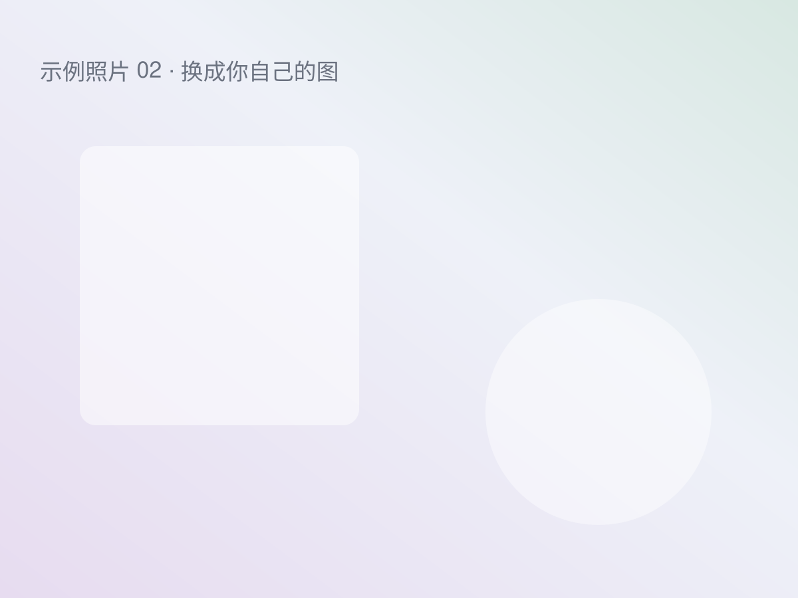

欢迎来到我的网站
这是第一篇文章。它同时也是一份说明书：告诉你以后怎么往这里加新内容。
写一篇新文章
在 content/posts/ 里新建一个 .md 文件，比如 我的第一篇随笔.md，开头写上配置：
---
title: 我的第一篇随笔
date: 2025-02-14
tags: [生活, 随笔]
---
正文从这里开始……然后运行一次生成命令：
node build/build.js网站的「文字」页面就会自动出现这一篇，首页的最新文字也会更新。
支持的写法
- 粗体、斜体、
删除线和行内代码 - 链接：我的 GitHub
- 图片：
 - 列表、引用、表格、代码块
- 视频：
::video[地址]（本地文件、B 站、YouTube 都行）
引用块是这样的。用来放一句想单独强调的话。

不想公开的草稿
在文件开头的配置里加上 draft: true，这篇文章就不会出现在网站上，但文件还留在本地。
好了，去写点什么吧。